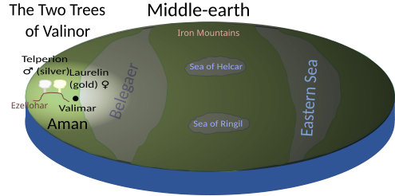
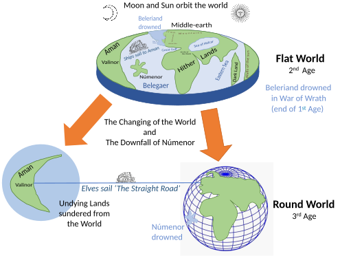
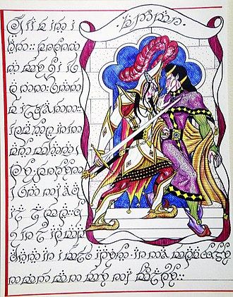

The Silmarillion is a book consisting of a collection of myths and stories in varying styles by the English writer J. R. R. Tolkien. It was edited, partly written, and published posthumously by his son Christopher Tolkien in 1977, assisted by Guy Gavriel Kay, who became a fantasy author. It tells of Eä, a fictional universe that includes the Blessed Realm of Valinor, the ill-fated region of Beleriand, the island of Númenor, and the continent of Middle-earth, where Tolkien's most popular works—The Hobbit and The Lord of the Rings—are set. After the success of The Hobbit, Tolkien's publisher, Stanley Unwin, requested a sequel, and Tolkien offered a draft of the writings that would later become The Silmarillion. Unwin rejected this proposal, calling the draft obscure and "too Celtic", so Tolkien began working on a new story that eventually became The Lord of the Rings.
The Silmarillion has five parts. The first, Ainulindalë, tells in mythic style of the creation of Eä, the "world that is." The second part, Valaquenta, gives a description of the Valar and Maiar, supernatural powers of Eä. The next section, Quenta Silmarillion, which forms the bulk of the collection, chronicles the history of the events before and during the First Age, including the wars over three jewels, the Silmarils, that gave the book its title. The fourth part, Akallabêth, relates the history of the Downfall of Númenor and its people, which takes place in the Second Age. The final part, Of the Rings of Power and the Third Age, tells the history of the rings during the Second and Third Ages, ending with a summary of the events of The Lord of the Rings.
The book shows the influence of many sources, including the Finnish epic Kalevala, Greek mythology in the lost island of Atlantis (as Númenor) and the Olympian gods (in the shape of the Valar, though these also resemble the Norse Æsir).
Because J. R. R. Tolkien died leaving his legendarium unedited, Christopher Tolkien selected and edited materials to tell the story from start to end. In a few cases, this meant that he had to devise completely new material, within the tenor of his father's thought, to resolve gaps and inconsistencies in the narrative, particularly Chapter 22, "Of the Ruin of Doriath".
The Silmarillion was commercially successful, but received generally poor reviews on publication. Scholars found the work problematic, not least because the book is a construction, not authorised by Tolkien himself, from the large corpus of documents and drafts also called "The Silmarillion". Scholars have noted that Tolkien intended the work to be a mythology, penned by many hands, and redacted by a fictional editor, whether Ælfwine or Bilbo Baggins. As such, Gergely Nagy considers that the fact that the work has indeed been edited actually realises Tolkien's intention.
Synopsis
The events described in The Silmarillion, as in J. R. R. Tolkien's extensive Middle-earth writings which the book summarises, were meant to have taken place at some time in Earth's past. In keeping with this idea, The Silmarillion was supposedly translated from Bilbo's three-volume Translations from the Elvish, which he wrote while at Rivendell. The book covers the history of the world, Arda, up to the Third Age, in its five sections:
| Age | Duration (years) | Silmarillion section/description |
|---|---|---|
| Creation | ——— |
|
| Years of the Lamps | 33,573 |
|
| Years of the Trees | 14,373 |
|
| First Age (cont'd) | 590 |
|
| Second Age | 3,441 |
|
| Third Age | 3,021 |
|
| Fourth to Sixth Ages | over 6,000 | (To present day, modern life) |
Ainulindalë and Valaquenta
Ainulindalë (Quenya: "The Music of the Ainur") takes the form of a primary creation narrative. Eru ("The One"), also called Ilúvatar ("Father of All"), first created the Ainur, a group of eternal spirits or demiurges, called "the offspring of his thought". Ilúvatar brought the Ainur together and showed them a theme, from which he bade them make a great music. Melkor—whom Ilúvatar had given the "greatest power and knowledge" of all the Ainur—broke from the harmony of the music to develop his own song. Some Ainur joined him, while others continued to follow Ilúvatar, causing discord in the music. This happened three times, with Eru Ilúvatar successfully overpowering his rebellious subordinate with a new theme each time. Ilúvatar then stopped the music and showed them a vision of Arda and its peoples. The vision disappeared, and Ilúvatar offered the Ainur the opportunity to enter into Arda and govern the new world.
Many Ainur accepted, taking physical form and becoming bound to that world. The greater Ainur became the Valar, while the lesser Ainur became the Maiar. The Valar attempted to prepare the world for the coming inhabitants (Elves and Men), while Melkor, who wanted Arda for himself, repeatedly destroyed their work; this went on for thousands of years and, through waves of destruction and creation, the world took shape.
Valaquenta ("Account of the Valar") describes Melkor, each of the fourteen Valar, and a few of the Maiar. It tells how Melkor seduced many Maiar—including those who would eventually become Sauron and the Balrogs—into his service.
Quenta Silmarillion

Quenta Silmarillion (Quenya: "The History of the Silmarils"), the bulk of the book in 24 chapters, is a series of interconnected tales set in the First Age that narrate the tragic saga of the three forged jewels, the Silmarils.
The Valar attempted to fashion the world for Elves and Men, but Melkor continually destroyed their handiwork. After he destroyed the two lamps, Illuin and Ormal, that illuminated the world, the Valar moved to Aman, a continent to the west of Middle-earth, where they established their home, Valinor. Yavanna created the Two Trees, Telperion and Laurelin, which illuminated Valinor, leaving Middle-earth to darkness and Melkor's wrath. Aulë, the smith of the Valar, created the Dwarves; Ilúvatar gave them life and free will. Aulë's spouse, Yavanna, was afraid the Dwarves would harm her plants, but Manwë said that spirits would awaken to protect them. Soon, stars created by Varda began to shine, causing the awakening of the Elves. Knowing the danger the Elves were in, the Valar decided to fight Melkor to keep the Elves safe. After defeating and capturing Melkor, they invited the Elves to live in Aman. This led to the sundering of the Elves; those who accepted and then remained in Aman were the Vanyar; those who went to Aman and later (mostly) returned to Middle-earth were the Noldor; those who refused were the Teleri, including those who became the Sindar, ruled by Thingol and Melian. All the Vanyar and Noldor, and later many of the Teleri, reached Aman.
In Aman, Melkor, who had been held captive by the Valar, was released after feigning repentance. Fëanor, son of Finwë, King of the Noldor, created the Silmarils, jewels that glowed with the captured light of the Two Trees. Melkor deceived Fëanor into believing that his younger half-brother Fingolfin was trying to turn Finwë against him. Fëanor drew his sword and threatened Fingolfin; this led the Valar to banish Fëanor from the city of Tirion, whereupon he created the fortress Formenos, further to the north. Finwë moved there to live with his favourite son. After many years, Fëanor returned at the command of the Valar to attend a festival, where he made peace of a sort with Fingolfin. Meanwhile, Melkor killed the Two Trees with the help of Ungoliant, a dark spider spirit. Melkor escaped to Formenos, killed Finwë, stole the Silmarils, and fled to Middle-earth. He attacked the Elvish kingdom of Doriath, ruled by Thingol and Melian. Melkor was defeated in the first of five battles of Beleriand and barricaded himself in his northern fortress of Angband.
Fëanor swore an oath of vengeance against Melkor and anyone who withheld the Silmarils from him, even the Valar, and made his seven sons do the same. He persuaded most of the Noldor to pursue Melkor, whom Fëanor renamed Morgoth, to Middle-earth. Fëanor's sons seized ships from the Teleri, killing many of them, and betrayed others of the Noldor, leaving them to make a perilous passage on foot across the dangerous ice of the Helcaraxë. The elves who did not go to Valinor, the Sindar, settled in Beleriand and traded with the dwarves. The Maia Melian set a magical protection, the Girdle of Melian, around the realm of Doriath.
Upon arriving in Middle-earth, the Noldor defeated Melkor's army, though Fëanor was killed by Balrogs. After a period of peace, Melkor attacked the Noldor but was placed in a tight siege, which held for nearly 400 years.
The Noldor built up kingdoms throughout Beleriand. Fëanor's firstborn Maedhros wisely chose to move himself and his brothers to the east, away from the rest of their kin, knowing that they would easily be provoked into war if they lived too close to their kinsmen. Fingolfin and his eldest son Fingon lived in the northwest. Fingolfin's second son Turgon and Turgon's cousin Finrod built hidden kingdoms, after receiving visions from the Vala Ulmo. Finrod hewed cave dwellings which became the realm of Nargothrond, while Turgon discovered a hidden vale surrounded by mountains, and chose that to build the city of Gondolin. Maeglin, grandson of Fingolfin and son of the dark elf Eöl, had a hopeless love for his first cousin Idril, whom he could not marry. He moved to Gondolin and became close to Turgon. Because of the secrecy of the Elvish cities of Beleriand, they were more secure from Melkor's armies. Turgon took great care to keep Gondolin secret, and it was one of the last Elven strongholds to fall.
After the destruction of the Trees and the theft of the Silmarils, the Valar created the moon and the sun; they were carried across the sky in ships. At the same time, Men awoke; some later arrived in Beleriand and allied themselves to the Elves. Beren, a Man who had survived the latest battle, wandered into Doriath, where he fell in love with the Elf maiden Lúthien, daughter of Thingol and Melian. Thingol believed no mere Man was worthy of his daughter, and set a seemingly impossible price for her hand: one of the Silmarils. Undaunted, Beren set out, and Lúthien joined him, though he tried to dissuade her. Sauron, a powerful servant of Melkor, imprisoned Beren, but with Lúthien's help, he escaped. Together, they entered Melkor's fortress and stole a Silmaril from his crown. Amazed, Thingol accepted Beren, and the first union of Man and Elf occurred, though Beren was soon mortally wounded and Lúthien died of grief. Though the fates of Man and Elf after death would sunder them forever, she persuaded the Vala Mandos to make an exception for them. He gave Beren back his life and allowed Lúthien to renounce her immortality and live as a mortal in Middle-earth. Thus, after they died, they would share the same fate.

The Noldor, emboldened by the couple's feat, attacked Melkor again, with a great army of Elves, Dwarves, and Men. But Melkor had secretly corrupted some of the Men, and the Elvish host was utterly defeated in the Fifth Battle.
Húrin and Huor were brothers; Huor died in battle, but Melkor captured Húrin and cursed him to watch the downfall of his kin. Húrin's son, Túrin Turambar, was sent to Doriath, leaving his mother and unborn sister behind in his father's kingdom of Dor-lómin (which was overrun by the enemy). Túrin achieved many great deeds of valour, the greatest being the defeat of the dragon Glaurung. Despite his heroism, however, Túrin fell under the curse of Melkor, which led him to unwittingly murder his friend Beleg and marry and impregnate his sister Nienor Níniel, who had lost her memory through Glaurung's enchantment. Before their child was born, the dragon lifted the enchantment. Nienor took her own life, and Túrin threw himself upon his sword. Húrin, a broken man, is finally set free. He hears his wife Morwen crying in a dream, and arrives to find her dead; he buries her. At Nargothrond, he kills the dwarf Mîm and takes the Nauglamír necklace from the dragon Glaurung's hoard. He takes it to Doriath. Húrin leaves, and drowns himself. Fighting between elves and dwarves breaks out over the Nauglamír and the Silmaril. Further fighting amongst the elves causes the ruin of Doriath.
Huor's son, Tuor, became involved in the fate of the hidden kingdom of Gondolin. He married Idril, daughter of Turgon, Lord of Gondolin (the second union between Elves and Men). When Gondolin fell, betrayed by the king's nephew Maeglin, Tuor saved many of its inhabitants. All the Elvish kingdoms in Beleriand fell, and the refugees fled to a haven by the sea created by Tuor. The son of Tuor and Idril Celebrindal, Eärendil the Half-elven, was betrothed to Elwing, herself descended from Beren and Lúthien. Elwing brought Eärendil Beren's Silmaril; the jewel enabled Eärendil to cross the sea to Aman to seek help from the Valar. They obliged, defeating Melkor and destroying Angband. Eärendil, flying in his ship Vingilot, with the birds, led by the Eagle Thorondor, defeated Melkor's dragons, who were led by Ancalagon The Black. Most of Beleriand sank into the sea; the Valar expelled Melkor from Arda. This ended the First Age of Middle-earth. The last two Silmarils were seized by Fëanor's sons, Maedhros and Maglor. However, because of the evil way the brothers had gained the Silmarils, they were no longer worthy to receive them, and the Silmarils burnt their hands. In anguish, Maedhros killed himself by leaping into a fiery chasm with his Silmaril, while Maglor threw his jewel into the sea and spent the rest of his days wandering along the shores of the world, singing his grief.
Eärendil and Elwing had two children: Elrond and Elros. As descendants of immortal elves and mortal men, they had the choice of lineage: Elrond chose to be an Elf, his brother a Man. Elros became the first king of Númenor, and lived to be 500 years old.
Akallabêth
Akallabêth ("The Downfallen") comprises about 30 pages, and recounts the rise and fall of the island kingdom of Númenor, inhabited by the Dúnedain. After the defeat of Melkor, the Valar gave the island to the three loyal houses of Men who had aided the Elves in the war against him. Through the favour of the Valar, the Dúnedain were granted wisdom and power and longer life, beyond that of other Men. Indeed, the isle of Númenor lay closer to Aman than to Middle-earth. The fall of Númenor came about through the influence of the corrupted Maia Sauron, the chief servant of Melkor, who arose during the Second Age and tried to conquer Middle-earth.
The Númenóreans moved against Sauron. They were so powerful that Sauron perceived that he could not defeat them by force. He surrendered himself to be taken as a prisoner to Númenor. There he quickly enthralled the king, Ar-Pharazôn, urging him to seek the immortality that the Valar had apparently denied him, fanning the envy that many of the Númenóreans had begun to hold against the Elves of the West and the Valar. The people of Númenor strove to avoid death, but this only weakened them and sped the gradual diminishing of their lifespans. Sauron urged them to wage war against the Valar to seize the immortality denied them. Ar-Pharazôn raised the mightiest army and fleet Númenor had ever seen, and sailed against Aman. The Valar and Elves of Aman, stricken with grief over their betrayal, called on Ilúvatar for help. When Ar-Pharazôn landed, Ilúvatar destroyed his forces and sent a great wave to submerge Númenor, killing all but those Númenóreans who had remained loyal to the Valar. The world was remade, and Aman was removed beyond the Uttermost West so that Men could not sail there to threaten it.
Sauron's physical manifestation was destroyed in the ruin of Númenor. As a Maia, his spirit returned to Middle-earth, though he was no longer able to take the fair form he had once had. The loyal Númenóreans reached the shores of Middle-earth. Among these survivors were Elendil, their leader and a descendant of Elros, and his sons Isildur and Anárion, who had saved a seedling from Númenor's white tree, the ancestor of that of Gondor. They founded two kingdoms: Arnor in the north and Gondor in the south. Elendil reigned as High King of both kingdoms, but committed the rule of Gondor jointly to Isildur and Anárion. The power of the kingdoms in exile was greatly diminished from that of Númenor, "yet very great it seemed to the wild men of Middle-earth".
Of the Rings of Power and the Third Age
The concluding section of the book, comprising about 20 pages, describes the events that take place in Middle-earth during the Second and Third Ages. In the Second Age, Sauron re-emerged in Middle-earth. The Rings of Power were forged by Elves led by Celebrimbor, but Sauron secretly forged One Ring to control the others. War broke out between the peoples of Middle-earth and Sauron, culminating in the War of the Last Alliance, in which Elves led by Gil-galad and the remaining Númenóreans led by Elendil united to defeat Sauron, bringing the Second Age to an end. The Third Age began with the claiming of the One Ring by Isildur after Sauron's overthrow. Isildur was ambushed by orcs and killed at the Gladden Fields shortly afterwards, and the One Ring was lost in the River Anduin. The section gives a brief overview of the events leading up to and taking place in The Lord of the Rings, including the waning of Gondor, the re-emergence of Sauron, the White Council, Saruman's treachery, and Sauron's final destruction along with the One Ring, which ends the Third Age.
Illustrations
The inside title page contains an English inscription written in Tengwar script. It reads "The tales of the First Age when Morgoth dwelt in Middle-earth and the Elves made war upon him for the recovery of the Silmarils to which are appended the downfall of Númenor and the history of the Rings of Power and the Third Age in which these tales come to their end."
Inside the back cover is a fold-out map of part of Middle-earth, Beleriand in the First Age.
Publication
While the writings are Tolkien's, they were published posthumously by his son, Christopher. Christopher selected the most complete stories and compiled them into a single volume, in line with his father's desire to create a body of work that spanned from the Creation of the World to the destruction of the One Ring. Due to this circumstance, the volume sometimes exhibits inconsistencies with "The Lord of the Rings" or "The Hobbit," with varying styles and featuring fully developed stories like Beren and Lúthien, or more loosely outlined ones, such as those dedicated to the War of Wrath.
The first edition was brought out in hardback by Allen & Unwin in 1977. HarperCollins published a paperback edition in 1999, and an illustrated edition with colour plates by Ted Nasmith in 2008. It has sold over a million copies, far fewer than The Hobbit and The Lord of the Rings which have each sold over 100 million copies. Its sales were sufficient for it to reach the top of the October 1977 lists. It has since been translated into at least 40 languages.
Concept and creation
Development
Tolkien began working on the stories that would become The Silmarillion in 1914. He intended them to become an English mythology that would explain the origins of English history and culture. Much of this early work was written while Tolkien, then a British Army officer returned from France during World War I, was in hospital and on sick leave. He completed the first story, "The Fall of Gondolin", in late 1916. The Ainulindalë followed in 1917.
He called his collection of nascent stories The Book of Lost Tales. This became the name for the first two volumes of The History of Middle-earth, a book series by Christopher Tolkien which include these early texts. The stories employ the narrative framing device of a mariner named Eriol (in later versions, an Anglo-Saxon named Ælfwine) who finds the island of Tol Eressëa, where the Elves live, and the Elves tell him their history. In "The Cottage of Lost Play", Tol Eressëa, corresponding to England, or in early versions Kortirion, corresponding to Warwick, linked the tales to England's lost mythology. Tolkien never completed The Book of Lost Tales; he left it to compose the poems "The Lay of Leithian" and "The Lay of the Children of Húrin".
The first version of The Silmarillion was the "Sketch of the Mythology" written in 1926 (later published in Volume IV of The History of Middle-earth). The "Sketch" was a 28-page synopsis written to explain the background of the story of Túrin to R. W. Reynolds, a friend to whom Tolkien had sent several of the stories. From the "Sketch", Tolkien developed a fuller narrative version of The Silmarillion called Quenta Noldorinwa (also included in Volume IV). The Quenta Noldorinwa was the last version of The Silmarillion that Tolkien completed.
In 1937, encouraged by the success of The Hobbit, Tolkien submitted to his publisher George Allen & Unwin an incomplete but more fully developed version of The Silmarillion called Quenta Silmarillion, but they rejected the work as being obscure and "too Celtic". The publisher instead asked Tolkien to write a sequel to The Hobbit. Tolkien began to revise The Silmarillion, but soon turned to the sequel, which became The Lord of the Rings. He renewed work on The Silmarillion after completing The Lord of the Rings, and he greatly desired to publish the two works together. When it became clear that would not be possible, Tolkien turned his full attention to preparing The Lord of the Rings for publication. Tolkien wished to make the mythology more believable by bringing it into line with the Round World version of the creation story. He was persuaded not to do this in 1946; later attempts conflicted with the already published texts of The Hobbit and The Lord of the Rings.
In the late 1950s, Tolkien returned to The Silmarillion, working mostly with the theological and philosophical underpinnings of the work rather than with the narratives. By this time, he had doubts about fundamental aspects of the work that went back to the earliest versions of the stories, and it seems that he felt the need to resolve these problems before he could attempt a "final" version. During this time, he wrote extensively on such topics as the nature of evil in Arda, the origin of Orcs, the customs of the Elves, the nature and means of Elvish rebirth, the flat world and the story of the Sun and Moon. In any event, with one or two exceptions, he wrought little change to the narratives during the remaining years of his life.
Posthumous publication
For several years after his father's death, Christopher Tolkien worked on a Silmarillion narrative. He tried to use the latest writings of his father's and to keep as much internal consistency (and consistency with The Lord of the Rings) as possible, given the many conflicting drafts. He enlisted the help of the Canadian Guy Gavriel Kay, now the author of a fantasy trilogy inspired by Arthurian legend (the Matter of Britain); Kay, chosen due to family connections, spent a year with him in Oxford editing the materials in secret. As explained in The History of Middle-earth, Christopher Tolkien drew upon numerous sources, relying on post-Lord of the Rings works where possible, ultimately reaching as far back as the 1917 Book of Lost Tales to fill in portions of the narrative that his father had planned to write but never addressed. In one later chapter of Quenta Silmarillion, "Of the Ruin of Doriath", untouched since the early 1930s, he had to construct a narrative practically from scratch. Christopher Tolkien commented that, had he taken more time and had access to all the texts, he might have produced a substantially different work. In his foreword to The Book of Lost Tales 1 in 1983, he wrote that
"by its posthumous publication nearly a quarter of a century later the natural order of presentation of the whole 'Matter of Middle-earth' was inverted; and it is certainly debatable whether it was wise to publish in 1977 a version of the primary 'legendarium' standing on its own and claiming, as it were, to be self-explanatory. The published work has no 'framework', no suggestion of what it is and how (within the imagined world) it came to be. This I now think to have been an error."
In October 1996, Christopher Tolkien commissioned the illustrator Ted Nasmith to create full-page full-colour artwork for the first illustrated edition of The Silmarillion. It was published in 1998, and followed in 2004 by a second edition featuring corrections and additional artwork by Nasmith.
Influences
The Silmarillion was influenced by many sources. A major influence was the Finnish epic Kalevala, especially the tale of Kullervo. Influence from Greek mythology is also apparent in the way that the island of Númenor recalls Atlantis, and the Valar borrow many attributes from the Olympian gods. The Valar, like the Olympians, live in the world, but on a high mountain, separated from mortals. The correspondences are only approximate; the Valar are also influenced by Norse mythology, with characteristics resembling various of the Æsir, the gods of Asgard. Thor, for example, physically the strongest of the gods, can be seen both in Oromë, who fights the monsters of Melkor, and in Tulkas, the physically strongest of the Valar. Manwë, the head of the Valar, exhibits some similarities to Odin, the "Allfather". Tolkien also said that he saw the Maia Olórin (Gandalf) as an "Odinic wanderer".
The influence of the Bible is seen in the conflict between Melkor and Eru Ilúvatar, a parallel of Lucifer's with God. Further, the creation and fall of the Elves parallels the Genesis creation narrative and the Book of Genesis' fall of Man. As with all of Tolkien's works, The Silmarillion allows room for later Christian history, and one draft even has Finrod speculating on the necessity of Eru's eventual Incarnation to save mankind.
Verlyn Flieger sees the influence of medieval Christian cosmology especially in the account of the creation of the universe as the manifestation of a sort of song sung by God with which the angels harmonise until the fallen angel introduces discord. St. Augustine's writings on music, as well as the extensive medieval tradition of the divine harmony—more familiar to us today in the notion of the "music of the spheres"—served as bases for this telling of creation.
Celtic influences were of several kinds. Dimitra Fimi has documented the influence of Celtic mythology in the exile of the Noldorin Elves, borrowing elements from the story of Irish legends of the Tuatha Dé Danann. Welsh influence is seen in the Elvish language Sindarin; Tolkien wrote that he gave it "a linguistic character very like (though not identical with) British-Welsh ... because it seems to fit the rather 'Celtic' type of legends and stories told of its speakers".
Reception

At the time of release, reviews of The Silmarillion were generally negative. The Tolkien scholar Wayne G. Hammond records that the book's publisher, Rayner Unwin, called the reviews "among the most unfair he had ever seen". The book was a commercial success, topping The New York Times Fiction Best Seller list in October 1977. It won the Locus Award for Best Fantasy Novel in 1978.
The Silmarillion was criticised for being too serious, lacking the light-hearted moments that were found in The Lord of the Rings and especially The Hobbit. Time magazine lamented that there was "no single, unifying quest and, above all, no band of brothers for the reader to identify with". Other criticisms included difficult-to-read archaic language and many difficult and hard-to-remember names. Robert M. Adams of The New York Review of Books called The Silmarillion "an empty and pompous bore" and "not a literary event of any magnitude". He suggested that the main reason for its "enormous sales" was the "Tolkien cult" created by the popularity of The Hobbit and The Lord of the Rings, and predicted that more people would buy The Silmarillion than would ever read it. The School Library Journal called it "only a stillborn postscript" to Tolkien's earlier works. Peter Conrad of the New Statesman stated that "Tolkien can't actually write" and was deficient in imagination.
A few reviewers praised the scope of Tolkien's creation. The New York Times Book Review acknowledged that "what is finally most moving is ... the eccentric heroism of Tolkien's attempt". Time described The Silmarillion as "majestic, a work held so long and so powerfully in the writer's imagination that it overwhelms the reader". The Horn Book Magazine lauded the "remarkable set of legends conceived with imaginative might and told in beautiful language". John Calvin Batchelor, in The Village Voice, lauded the book as a "difficult but incontestable masterwork of fantasy" and praised the characterisation of Melkor, describing him as "a stunning bad guy" whose "chief weapon against goodness is his ability to corrupt men by offering them trappings for their vanity".
In 2004, Adam Roberts wrote a parody of the book, The Sellamillion. In a 2019 article, Le Monde called The Silmarillion a "cornerstone of Tolkien's imagination" and "the book by J. R. R. Tolkien that rules them all".
Analysis
A challenge to complete
Academic criticism of Christopher Tolkien's 1977 text concentrated on his father's intention to complete the work: Since he did not do so, his plans for the overall narrative, out of the large collection of draft texts, were not clearly discernible. That in turn meant, argued the Tolkien scholar Charles Noad, that Silmarillion criticism ought first to "evolve approaches to this textual complex as it [was], including Christopher Tolkien's 1977 Silmarillion".
Gergely Nagy writes that The Silmarillion is long both in Middle-earth time and in years of Tolkien's life; and it provides the impression of depth for both The Hobbit and The Lord of the Rings. It is however in his view "immensely problematic" as it is not a "work" as usually understood: "The Silmarillion" (in roman) is the enormous corpus of documents and drafts that J. R. R. Tolkien built up throughout his creative life, while "The Silmarillion" (in italics) is the 1977 book that Christopher Tolkien edited. The corpus is now published in the twelve volumes of Christopher Tolkien's The History of Middle-earth. The corpus is not a single work but many versions of many works, while the book "is often regarded as not an authentic 'Tolkien text'". Tolkien did not authorise the 1977 text; he did not even write all of it; and he did not define the frame in which it was to be presented. Nagy notes that in 2009, Douglas Charles Kane published a "hugely important resource", his Arda Reconstructed, which defines "exactly from what sources, variants, and with what methods" Christopher Tolkien constructed the 1977 book.
Themes
The Silmarillion is thematically complex. One key theme is its nature as a mythology, with multiple interrelated texts in differing styles; David Bratman has named these as "Annalistic", "Antique" and "Appendical". All of these are far from the approachable novelistic styles of The Hobbit and The Lord of the Rings, lacking a single narrative thread, and without the benefit of Hobbits as guides, as Tolkien noted in a letter.
Another major theme is sensitively analysed by Flieger in her 2002 book Splintered Light, which Nagy notes was the first full monograph on The Silmarillion. Flieger shows that a central theme of Tolkien's writing is the progressive fragmentation of the light from the moment of the creation; light symbolises both the divine creation and the author's subcreation. Key symbols including the Two Trees of Valinor, the Silmarils themselves, the transformation of Eärendil the Mariner and his ship Vingilot into the Morning Star, and the White Tree of Númenor all embody the light.
The Tolkien scholar Tom Shippey writes that The Silmarillion is most obviously a calque on the Book of Genesis in the Bible (whereas the Shire is a calque upon England). Shippey quotes Tolkien's friend C. S. Lewis, who stated that even Satan was created good; Tolkien has the character Elrond in The Lord of the Rings say "For nothing is evil in the beginning. Even [the Dark Lord] Sauron was not so." Shippey concludes that the reader is free to assume "that the exploit of Morgoth of which the Eldar [Elves] never learnt was the traditional seduction of Adam and Eve by the [Satanic] serpent", while the Men in the story are Adam's descendants "flying from Eden and subject to the curse of Babel".
| Silmarillion element | Biblical element |
|---|---|
| Ainulindalë | Creation myth |
| Ilúvatar | The One God |
| Melkor/Morgoth | Satan |
| Elves | Men |
| Quenta Silmarillion | Fall of man |
A further theme is that of secondary creation or mythopoeia, linking Tolkien's beliefs about mythology, language and art, including music with his Catholicism: the fictional "Secondary World" can be beautiful because it mirrors God's creation. The Ainulindalë directly describes the creation of Arda as an artistic process, the Music of the Ainur having its own beauty but also awakening the world into being.
A presented collection
Verlyn Flieger analyses at length Tolkien's way of thinking of his own mythology as a presented collection, with a frame story that changed over the years, first with a seafarer called Eriol or Ælfwine who records the sayings of the "fairies" or translates the "Golden Book" of the sages Rumil or Pengoloð; later, he decided that the Hobbit Bilbo Baggins collected the stories into the Red Book of Westmarch, translating Elvish documents in Rivendell. Nagy observes that this means that Tolkien "thought of his works as texts within the fictional world" (his emphasis), and that the overlapping of different accounts was central to his desired effect. Nagy notes that Tolkien went so far with his artwork as to create facsimile pages from the Dwarves' Book of Mazarbul that is found by the Fellowship in Moria. Further, Tolkien was a philologist; Nagy comments that Tolkien may have been intentionally imitating the philological style of Elias Lönnrot, compiler of the Finnish epic, the Kalevala; or of St Jerome, Snorri Sturlusson, Jacob Grimm, or Nikolai Gruntvig, all of whom Tolkien saw as exemplars of a professional and creative philology. This was, Nagy believes, what Tolkien thought essential if he was to present a mythology for England, since such a thing had to have been written by many hands. Further, writes Nagy, Christopher Tolkien "inserted himself in the functional place of Bilbo" as editor and collator, in his view "reinforcing the mythopoeic effect" that his father had wanted to achieve, making the published book do what Bilbo's book was meant to do, and so realising his father's intention.
Editorial intervention
Tolkien failed to bring The Silmarillion to publication in his lifetime. His son and literary executor Christopher decided to construct "a single text, selecting and arranging in such a way as seemed to me to produce the most coherent and internally self-consistent narrative." Among the difficulties was that the legendarium was conceived as a set of documents of different types. For instance, The Lost Road and Other Writings records that in the late 1930s, The Silmarillion consisted of:
- Qenta Silmarillion (narrative)
- The houses of the princes of Men and Elves (fictional genealogies)
- The tale of years (fictional annals)
- The tale of battles (fictional history)
- The Annals of Valinor (annals from Aman, far from Middle-earth)
- The Annals of Beleriand (annals from a region destroyed at the end of the First Age)
- The Lhammas or Account of Tongues (fictional sociolinguistics)
As if this were not complicated enough, Tolkien continually changed the structure and content of The Silmarillion throughout his life, so that the text was "a creation of unceasing fluidity". Some documents were complete and highly polished. Others were hasty drafts or sketchy outlines, begun but never completed, superseded as soon as written. Further, Tolkien experimented with names, sometimes changing them mid-document; a character could go through multiple names before the author settled on one that sounded right.
His father had accordingly foreseen that the stories would have to be "worked over", "made consistent", and "given some progressive shape" to make them into a readable book. The result is certainly unlike the mass of overlapping documents of the legendarium; it differs, too, in style and rhythm; and Christopher was obliged to invent story elements, both to fill gaps in the narrative, and to connect threads that simply did not fit together as they stood. Randel Helms stated in terms in 1981 that "The Silmarillion in the shape that we have it [a single-volume narrative] is the invention of the son not the father".
Christopher admitted in 1983 that the wisdom of publishing The Silmarillion with no frame story (whereas the legendarium and The Lord of the Rings each have their own), "no suggestion of what it is and how (within the imagined world) it came to be", was "certainly debatable". He added "This I now think to have been an error."
Influence in music
In 1998, the German power metal band Blind Guardian released a concept album about the events in the book titled Nightfall in Middle-Earth. All 25 of its tracks detail events from The Silmarillion, and have titles that allude to those events. For example, track 7 is titled "The Curse of Fëanor".
The Norwegian classical composer Martin Romberg has written three full-scale symphonic poems, "Quendi" (2008), "Telperion et Laurelin" (2014), and "Fëanor" (2017), inspired by passages from The Silmarillion. The works were premiered by orchestras in Southern France between 2009 and 2017.
The British rock band Marillion and the French black metal band Hirilorn (later, Deathspell Omega) took their names from the book, as did the Swedish death metal band Amon Amarth, Sindarin for "Mountain of Doom".